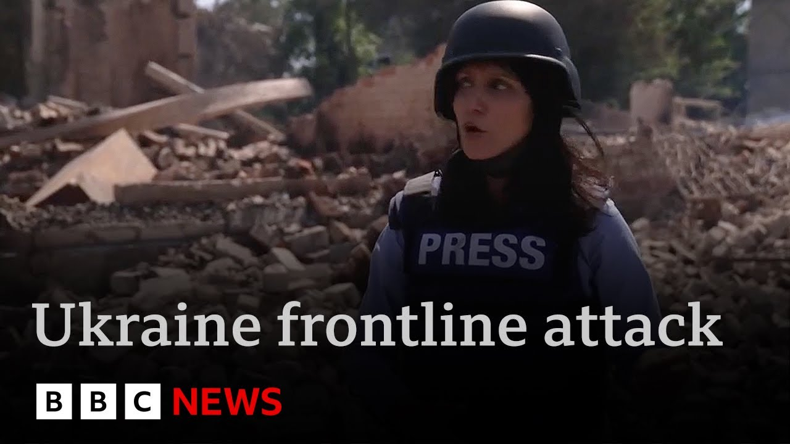

【战争前线：BBC新闻团队在乌克兰战火中躲避无人机袭击 | BBC新闻】
Summary: The town of Rodynske in Ukraine’s Donetsk region has been on the frontline of the war, suffering intense Russian drone attacks that even forced BBC journalist Yogita Limaye and her crew to run for cover, as Moscow mounts a new push to advance deeper into Ukraine — President Zelensky warns that over 50,000 troops, including elite units, have been massed near the northeastern Sumy region in preparation for a large‑scale summer offensive, even as Russia prepares to lay out its conditions for resuming ceasefire talks.
摘要： 乌克兰顿涅茨克地区的罗丁斯克镇一直位于战区前线，遭到猛烈的俄军无人机袭击，甚至迫使BBC记者尤吉塔·利迈耶及其团队紧急避难；与此同时，莫斯科正在发起新一轮进攻，以期更深入地推进乌克兰，泽连斯基总统警告称，俄军已在乌克兰东北部苏梅地区集结超过5万名包括精锐部队在内的兵力，为大规模夏季攻势做准备，而俄罗斯也正酝酿提出继续停火谈判的条件。

⏱️ Estimated Reading Time: 12 min
Ukraine's President Zalinski has warned that Russia is amassing tens of thousands of troops on its border as it launches a new offensive to capture more territory in eastern Ukraine.
乌克兰总统泽连斯基警告称，俄罗斯正在边境集结数万军队，准备在乌东部发动新攻势以夺取更多领土。
He was speaking on a visit to Germany where the new chancellor Friedrich Mets said his country would help Ukraine develop new long range missiles.
他在访问德国期间表示，新任总理弗里德里希·梅茨承诺将协助乌克兰研发远程导弹。
Well, Russia has stepped up its assaults on front lines in Sunumi, Khakiv, and Daetsk.
俄军已加强在苏梅、哈尔科夫和顿涅茨克前线的攻击。
Its forces have made the most significant advances since January around Donetsk in what's being seen as the start of a summer offensive.
俄军在顿涅茨克周边取得自1月以来最显著进展，这被视为夏季攻势的开端。
President Trump said earlier it'll become clear in the next week whether Russia wants to end the war.
特朗普总统称未来一周将揭示俄罗斯是否希望结束战争。
Moscow's foreign minister said tonight it's proposing new peace talks with Ukraine next week in Istanbul.
莫斯科外长提议下周在伊斯坦布尔举行新一轮和谈。
We'll hear more shortly about President Zalinski's visit to Germany.
稍后将详细报道泽连斯基总统的德国之行。
But first, our correspondent Yoga Tamaya has been on Ukraine's eastern front line with camera operator Sanjay Ganguli and producer Imagin Anderson.
但首先，我们的记者尤加·塔玛亚与摄像师桑杰·甘古利及制片人伊玛金·安德森在乌东部前线。
They sent this report.
他们发回以下报道。
The aftermath of Russia's vicious onslaught over the past few days is visible across Ukraine, but especially here in towns just behind the front lines.
俄军近日猛烈袭击的后果在乌克兰各地可见，尤其是前线后方城镇。
This is Riddki, north of the embattled city of Prosk.
这里是普罗克斯激战城市以北的里德斯基镇。
A glide bomb ripped through the town's main administrative building and three apartment blocks.
一枚滑翔炸弹击穿了镇行政大楼和三座公寓楼。
From the edges, we can hear artillery fire and outgoing gunfire from Ukrainian soldiers shooting at drones.
边缘处可听到炮火声和乌军射击无人机的枪声。
Just in the past 2, 3 weeks, things have changed on this front.
近两三周前线局势已发生变化。
The most significant advance that Russia has possibly made since the start of January.
这是俄军自1月初以来可能取得的最大进展。
Many believe this is the start of the summer offensive to take.
许多人认为这是夏季攻势的开端。
We hear a Russian drone and then another one making impact.
我们听到一架俄军无人机，接着另一架击中目标。
We run to the closest cover, a tree above us.
我们跑向最近的掩体——头顶的树。
The drone continues to hover.
无人机仍在盘旋。
The terrifying worring sound of what's become the deadliest weapon of this war.
这种战争中最致命武器发出恐怖的嗡鸣声。
Stay or come.
留下还是撤离。
[Applause] Come.
[掌声] 快撤。
We've just run to safety inside uh a house here in Riddleski.
我们刚躲进里德斯基镇一所房屋避险。
We actually saw a drone that was moving at really high speed and we can still hear gunshot sounds potentially uh drones being shot down.
我们目睹一架高速飞行的无人机，仍能听到可能是击落无人机的枪声。
You can really see and feel the Russian advance here in the Dunets region.
在顿涅茨克地区能清晰感受到俄军的推进。
It's changed, I would say, just in the past 2, 3 weeks that we have been [Applause] here.
可以说过去两三周我们在此见证剧变。
This is what it's like every minute for soldiers fighting this war.
这就是参战士兵每分钟的常态。
About half an hour later, when it's safe to leave, we speed out.
约半小时后安全时我们迅速撤离。
By the side of the road, what is likely a downed drone in a town further away from the front line, we see a row of homes destroyed by a missile overnight.
在远离前线的镇子路边，疑似坠毁无人机旁是一排被夜间导弹摧毁的房屋。
Bilitzky is now increasingly being hit, its residents exhausted.
比利茨基镇遭袭日益频繁，居民精疲力竭。
Alexander now forced to decide whether to stay or leave.
亚历山大被迫决定去留。
I wish it would stop.
希望战争结束。
No one needs this war.
没人需要这场战争。
I've had enough, he says.
他说自己受够了。
packet you off.
打包撤离吧。
But the diplomatic momentum to get the war to stop seems to have hit a dead end.
但停战的外交势头似乎陷入僵局。
And Ukraine is working to ramp up its arsenal, big and small.
乌克兰正努力扩充各类军备。
A soldier with the call sign moderator is building the latest weapon to hit this war zone, a fiber optic drone.
呼号"调解员"的士兵正在制作战区最新武器——光纤无人机。
A spool with tens of kilometers of cable is fitted to the bottom of the drone.
无人机底部装有数万米长的线缆轴。
fine and sturdy.
纤细而坚固。
The fiber optic cord is then physically attached to the controller that's held by the pilot.
光纤线直接连接至飞手持有的控制器。
It's really important because on our front line, the enemy has a lot of electronic interceptors which jam all the frequencies, so we can't fly our usual drones.
这至关重要，因前线敌军电子干扰器会阻塞所有频段，常规无人机无法飞行。
Ukraine is playing a game of catch-up, deploying fiber optic devices.
乌克兰正追赶部署光纤设备的步伐。
Russia started using them months before Ukraine, the soldiers tell us.
士兵称俄军早于乌方数月使用该技术。
The chilling impact of rapidly changing technology can be seen in this recent video from the Eastern Front.
这段东部前线近期视频展示了技术快速迭代的寒意。
A Russian drone chases an armored vehicle carrying Ukrainian soldiers.
俄军无人机追击载有乌士兵的装甲车。
The jammers on the top could have neutralized normal drones, but not a fiber optic one.
车顶干扰器本可瘫痪普通无人机，但对光纤型号无效。
It flies straight through the back door and explodes.
它径直穿过后门引爆。
Transporting soldiers to and from the front is often deadlier than the battlefield.
往返前线的运输常比战场更致命。
At a safe house just out of reach of drones, we meet Sarah, who works in a mortar unit.
在无人机射程外的安全屋，我们遇见迫击炮部队的莎拉。
The terrain is flat, so there is nowhere to hide.
地势平坦无处藏身。
And right now, you can feel the intensity of Russia's assaults grown stronger.
此刻能感受到俄军攻势愈发猛烈。
The men prepare to deploy to their positions.
士兵们准备进入阵地。
As the war enters a fourth summer, most of the soldiers we meet are those who've joined after the full-scale invasion began.
战争进入第四年夏季，我们遇见的多是全面入侵后入伍的士兵。
Maxim worked in a drinks company.
马克西姆曾在饮料公司工作。
Now he's at the very front of Ukraine's defense.
如今他站在乌克兰防御最前线。
There are times I've spent 30 days in my position.
有时需在阵地坚守30天。
There was one instance when we didn't sleep for 3 days because the Russians kept coming at us wave after wave.
有次俄军连续三天波浪式进攻，我们无法入睡。
I ask how his family copes with his job.
我问他的家人如何应对。
It's very it's very hard.
非常非常艰难。
A soldier fighting for his country, but also just a father missing his 2-year-old boy.
他是为国而战的士兵，也是思念两岁儿子的父亲。
Yoga Almay, BBC News, Eastern Ukraine.
BBC新闻尤加·阿尔梅，乌东部报道。
Well, as we mentioned, Germany has offered more support to Ukraine during a meeting with President Zilinski in Berlin.
如前所述，德国在与泽连斯基总统柏林会晤时承诺加大援乌力度。
Chancellor Friedrich Mertz announced his country would help Keev develop its own long range missiles.
总理弗里德里希·梅茨宣布将协助基辅研发远程导弹。
As Jessica Parker reports from Berlin.
杰西卡·帕克从柏林发回报道。
President Zalinski's been here before, but never to be greeted by this man, Germany's new chancellor, who's outspoken in his backing for Kev and in his criticism of Moscow.
泽连斯基总统此前访德时，未曾受到这位新任总理的接待——他直言支持基辅并批评莫斯科。
This is President Zilinsk's first visit to Berlin since Friedrich Mertz took office.
这是弗里德里希·梅茨就任后泽连斯基首次访德。
The new chancellor is promising to make Germany a more assertive player when it comes to European defense and security.
新任总理承诺使德国在欧洲防务安全领域更具话语权。
There was no long- awaited public pledge to supply Keev with Germany's powerful Taurus missiles, but a plan instead for Berlin to help Ukraine make long range weapons.
外界期待德国公开承诺提供"金牛座"导弹落空，取而代之的是协助乌方制造远程武器的计划。
There will be no range restrictions, allowing Ukraine to fully defend itself, even against military targets outside its own territory.
射程不受限，使乌克兰能全面自卫，包括打击境外军事目标。
The details are unclear, but the Kremlin accused Berlin of being irresponsible.
细节尚不明确，克里姆林宫指责柏林不负责任。
President Zilinski accused Moscow of stalling on peace talks.
泽连斯基总统指控莫斯科拖延和谈。
The issue lies solely with Putin with a constant postponement.
问题全在普京不断的拖延。
They keep looking for reasons to delay any format that could end the war.
他们不断寻找理由推迟任何可能结束战争的谈判形式。
Russia then claimed it's ready for fresh talks.
俄方随后声称准备重启谈判。
As in the US, Donald Trump said he's waiting to see if President Putin is serious.
美国方面，特朗普称正观察普京总统是否认真。
Within two weeks, we're going to find out very soon.
两周内我们很快会知晓。
Uh we're going to find out whether or not he's tapping us along or not.
我们将弄清他是否在敷衍。
And if he is, we'll respond a little bit differently, but it'll take about a week and a half, two weeks.
若是，我们会采取不同应对，但还需一两周时间。
In Berlin, they stood for the Ukrainian national anthem.
柏林会晤期间众人起立奏乌克兰国歌。
Chancellor Mertz has warned that fighting between Ukraine and Russia could yet drag on.
梅茨总理警告乌俄战斗可能持续。
There may be talk of peace, but there's preparation too for a protracted war.
虽有和谈之声，但也在为持久战做准备。
Jessica Parker, BBC News in Berlin.
BBC新闻杰西卡·帕克，柏林报道。
Well, let's talk to our Ukraine correspondent, James Waterhouse.
现在连线乌克兰记者詹姆斯·沃特豪斯。
Uh Sergey Lavrov, as we mentioned, suggesting there might be talks next week in Istanbul.
如所述，谢尔盖·拉夫罗夫提议下周伊斯坦布尔和谈。
James, I mean, does that really seem likely given everything we are witnessing on the ground?
詹姆斯，鉴于当前局势，这真的可能吗？
Jane, we we may well could see further talks, but we've been talking about talks for three months now of no concrete outcome.
简，或许会有更多谈判，但三个月来谈判始终无实质成果。
You heard those German warnings there of the war dragging on, and that is because of the perpetual cycle Ukraine finds itself in.
德国警告战争可能持续，因乌克兰陷入恶性循环。
Zalinski went to Berlin uh where there was talk of Germany directly supplying missiles.
泽连斯基访德期间讨论过德方直接提供导弹。
The details of what has come out of that in terms of Germany helping Ukraine manufacture cruise missiles down the line, it's all vague.
但德国协助乌方制造巡航导弹的具体细节仍模糊。
how Europe steps up without America uh either during this war or after a ceasefire is signed is still not clear.
无论战时还是停战后，欧洲如何在美国缺席时发力尚不明确。
Then you have America uh once uh a couple of days ago Donald Trump said Vladimir Putin was playing with fire with his sustained drone attacks and refusals to engage in on a meaningful level in these peace talks.
再看美国——日前特朗普称普京持续发动无人机袭击并拒绝实质性参与和谈是在玩火。
But we don't yet know what that means.
但我们尚不清楚这意味着什么。
And as you saw in Yogurt's report there, the front lines where you have Russia using familiar tactics to push forward, depopulize uh frontline settlements uh and weaken Ukraine's position at a at a potential peace negotiation down the line.
如尤加报道所示，前线俄军采用惯用战术推进，使前线居民点人口减少，削弱乌方在未来和谈中的地位。
The benefits for Moscow are seen as outweighing the risks of antagonizing Washington if these ceasefire efforts are further delayed.
若停火努力继续拖延，莫斯科认为激怒华盛顿的风险将被收益抵消。
James, thank you.
詹姆斯，谢谢。
James Waterhouse.
詹姆斯·沃特豪斯。